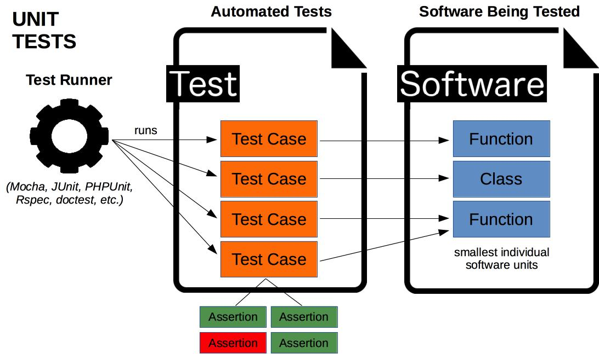
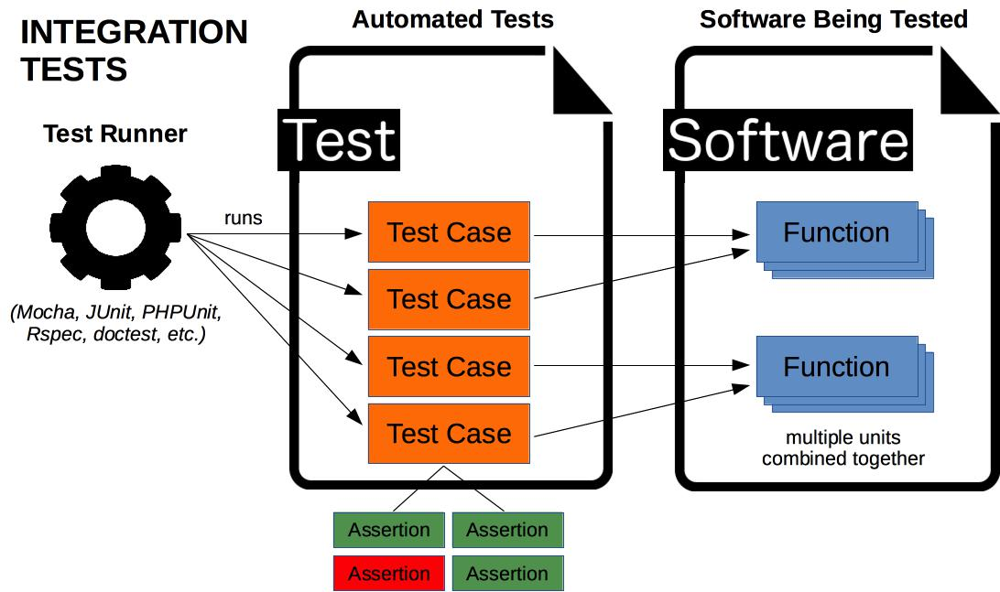

# Automated Testing Learn about the various kinds of automated tests. **Going further** * [Set up automated testing for an Express.js REST API](https://github.com/MediaComem/comem-archioweb/blob/main/guides/set-up-automated-tests.md) --- class: center, middle ## What is automated testing? .breadcrumbs[<a href="#1">Automated Testing</a>] <p class='center'></p> --- ### Manual testing .breadcrumbs[<a href="#1">Automated Testing</a> > <a href="#2">What is automated testing?</a>] .grid-50[ When writing or modifying software, especially large software, you must regularly **test** it to make sure it works. **Manual testing** is basically testing the software yourself, whether it's a desktop or mobile application, or a website. You'll browse through the pages or screens, fill and submit forms, trigger actions, etc. ] .grid-50[ <img class='w100' src='images/manual-testing.jpg' /> ] --- #### Quality assurance .breadcrumbs[<a href="#1">Automated Testing</a> > <a href="#2">What is automated testing?</a> > <a href="#3">Manual testing</a>] In a large company, this might be handled by specialized [Quality Assurance (QA)][qa] engineers. Whether you or a QA engineer is doing it, manual testing has certain disadvantages: .grid-70[ * It is **time-consuming**. Testing a large software application manually can take hours or even days. You might skip some tests to save time, allowing bugs to stay hidden. * It is **boring** and **repetitive**. This makes it more likely that you will make a mistake while testing and miss a bug. ] .grid-30[ <img class='w100' src='images/time-consuming.jpg' /> ] --- ### Automated testing .breadcrumbs[<a href="#1">Automated Testing</a> > <a href="#2">What is automated testing?</a>] .grid-65[ Running functions, making HTTP calls or clicking on specific buttons does not have to be done by a human being. A program can do it just as well, *and it will never get bored doing it*. ] .grid-35[ ] .container[ [**Test automation**][automated-tests] is the use of special **testing software**: * The test software is **separate from the software being tested**. * It **executes tests automatically** instead of manually. * It compares **actual outcomes** (what actually happens) versus **expected** outcomes (what you expected to happen when writing the test). ] --- ### Automated vs. manual .breadcrumbs[<a href="#1">Automated Testing</a> > <a href="#2">What is automated testing?</a>] .grid-50[ **Automated tests are not a replacement for manual tests**. They are complementary in that they can be used to accelerate or automate tests that can be run by a machine instead of a human. But an automated test cannot think. Manual testers still have their place, but are better employed running complex or hard-to-reproduce tests which actually require a human being at the wheel, or finding ways to break your application. ] .grid-50[ <p class='center'><img class='w100' src='images/thinker.png' /></p> ] --- ### Test frameworks .breadcrumbs[<a href="#1">Automated Testing</a> > <a href="#2">What is automated testing?</a>] There are many test frameworks written in various languages. These are all **test runners**, i.e. they can be used to write and execute tests: Frameworks | Tests written in :------------------------------------------------------------------------------------- | :------------------ [Mocha][mocha], [Jasmine][jasmine], [Jest][jest], [SuperTest][supertest], [Tape][tape] | [JavaScript][js] [JUnit][junit], [JMeter][jmeter], [Robotium][robotium] | [Java][java] [PHPUnit][phpunit] | [PHP][php] [RSpec][rspec], [test-unit][ruby-test-unit] | [Ruby][ruby] [doctest][doctest], [unittest][python-unittest] | [Python][python] [Go Test][go-test] | [Go][go] [Quick][quick] | [Swift][swift] [kotlin.test][kotlin.test] | [Kotlin][kotlin] [Mix Test][mix-test] | [Elixir][elixir] [Elm Test][elm-test] | [Elm][elm] [Apium][appium], [Cucumber][cucumber], [Selenium WebDriver][selenium-webdriver] | *Various languages* --- #### Which test framework should I use? .breadcrumbs[<a href="#1">Automated Testing</a> > <a href="#2">What is automated testing?</a> > <a href="#7">Test frameworks</a>] It depends on what kind of test you want to write. **If you want to test an individual function**, a PHP function for example, you must use a **test framework written in the same language**, such as [PHPUnit][phpunit]. However, **if you want to test an API** or drive a mobile application or website, **it does not matter in which language the test framework is written**, as long as it can make the required HTTP calls or click on the correct buttons. For example: * [SuperTest][supertest] is a JavaScript tool to test APIs. It could be used to test an API implemented in PHP with Laravel, or with any other language or framework. * [Selenium WebDriver][selenium-webdriver] is a tool to automate browser tests. It can test any web application or site, regardless of the language or framework used to implement that application or site. --- ### Types of automated tests .breadcrumbs[<a href="#1">Automated Testing</a> > <a href="#2">What is automated testing?</a>] There are various types of automated tests, and some of these types overlap. Not everybody agrees how they should be called: .grid-33[ <img class='w100' src='images/pyramid-1.png' /> ] .grid-33[ <img class='w100' src='images/pyramid-2.png' /> ] .grid-33[ <img class='w100' src='images/pyramid-3.png' /> ] --- ### Yet another classification .breadcrumbs[<a href="#1">Automated Testing</a> > <a href="#2">What is automated testing?</a>] This is one way to look at the different types of tests: Type | What is tested | Properties :--------------------------------------- | :------------------------------------------------------------------------------------------- | :---------------------------- [Unit tests][unit-testing] | Things in isolation. | Fastest, easiest to maintain. [Integration tests][integration-testing] | A number of things plugged together. | [System tests][system-testing] | Whole system from the user's perspective, often through the GUI; also known as "end-to-end". | Slower, harder to maintain. > There are also other specialized types of tests, like [API tests][api-testing] > which are used to test REST APIs; or [performance tests][performance-testing] > which can be used to test the response time or scalability of software and > infrastructure. You could consider they are a subtype of integration and > system tests. --- class: center, middle ## Unit tests .breadcrumbs[<a href="#1">Automated Testing</a>] <p class='center'><img class='w80' src='images/unit-tests.png' /></p> --- ## What is a unit test? .breadcrumbs[<a href="#1">Automated Testing</a>] The goal of [unit testing][unit-testing] is to test **individual units of source code in isolation**. You can view a **unit** as the **smallest testable part of your software**. <p class='center'></p> --- ### How to write a unit test .breadcrumbs[<a href="#1">Automated Testing</a> > <a href="#12">What is a unit test?</a>] For example, you might test an individual JavaScript function. ```js function add(a, b) { return a + b; } ``` When writing a unit test for a piece of code, you want to identify the **inputs** and **outputs** (or side effects) of that code. In this case: * There are **two numbers as inputs**, `a` and `b`. * There is **one number as output**. --- ### Assertions .breadcrumbs[<a href="#1">Automated Testing</a> > <a href="#12">What is a unit test?</a>] Once you have the inputs and outputs, you want to define **assertions** on how that code should behave. ```js function add(a, b) { return a + b; } ``` Assertions are the outputs you expect for specific inputs. For example: * For inputs 2 and 3, the **expected** output is 5. * For inputs -3 and 4, the **expected** output is 1. * For inputs 10 and -12, the **expected** output is -2. When implementing unit tests, you will execute the code and use assertions to compare the **actual** output value with the **expected** one. --- ### An implementation in JavaScript .breadcrumbs[<a href="#1">Automated Testing</a> > <a href="#12">What is a unit test?</a>] For example, this is how you could write those assertions with the [Mocha][mocha] test runner and the [Chai][chai] assertion library: ```js describe('add', function() { test('should add two numbers together', function() { * const actual = add(2, 3); * const expected = 5; * expect(actual).toEqual(expected); }); test('should add a positive number to a negative number', function() { expect(add(-3, 4)).toEqual(1); }); test('should add a negative number to a positive number', function() { expect(add(10, -12)).toEqual(-2); }); }); ``` --- ### Why write unit tests? .breadcrumbs[<a href="#1">Automated Testing</a> > <a href="#12">What is a unit test?</a>] Unit tests allow to isolate each part of a program and **prove that each individual part is correct**. > Unit tests provide a strict, written contract. Unit tests may **reduce uncertainty** in the units themselves. > By testing the parts of a program first and then testing the sum of its parts, > integration testing becomes much easier. --- #### Disadvantages of unit tests .breadcrumbs[<a href="#1">Automated Testing</a> > <a href="#12">What is a unit test?</a> > <a href="#16">Why write unit tests?</a>] Unit tests **will not catch every error in the program**, because they cannot evaluate every execution path in any but the most trivial programs. They will not catch integration errors or broader system-level errors. Software testing is a combinatorial problem. For every logical branch (true or false), a test case must be written, which is quite time-consuming and might not be worth the effort. To obtain the intended benefits from unit testing, rigorous discipline is needed throughout the software development process. You must keep track of which tests have been written already, which are missing, and ensure that failures are reviewed and addressed immediately. --- ## Integration tests .breadcrumbs[<a href="#1">Automated Testing</a>] When doing integration tests, individual software **units are combined and tested as a group**. This **ensures that components work well together**, not only individually as tested by unit tests. <p class='center'></p> --- ### Advantages and disadvantages of integration testing .breadcrumbs[<a href="#1">Automated Testing</a> > <a href="#18">Integration tests</a>] **Advantages** * Integration tests help **discover interfacing problems** between components. * Integration tests **catch system-level issues**, such as miscommunication, broken database schema, mistaken cache integration, and so on, which might be difficult to identify with unit tests. **Disadvantages** * **Finding bugs is more difficult** than with unit tests. When an integration test fails, since multiple components are combined, it may be unclear which one is causing the bug. --- ## API tests .breadcrumbs[<a href="#1">Automated Testing</a>] [API testing][api-testing] involves **testing application programming interfaces (APIs)** directly to **determine if they meet expectations** for functionality, reliability, performance and security. For example, your application may provide a [RESTful][rest] API or an [RPC][rpc] API accessible over the Internet. Automated tests can make HTTP calls to these APIs and compared actual outcomes with expected outcomes. > **API tests can be considered a type of integration test** since they test > multiple components of your API working together. --- ### How to write an API test .breadcrumbs[<a href="#1">Automated Testing</a> > <a href="#20">API tests</a>] The tools used to write integration tests are often the same as for unit tests. You might need additional tools depending on the type of test. For example, when testing a REST API, you will need to make HTTP requests somehow. But the basic principle is the same as for unit tests: * Think about the inputs (HTTP request) and outputs (HTTP response, database changes, etc) of an API operation. In other words, define the **expected** result of the operation. * Perform that API operation (make the HTTP request and retrieve the response). In other words, get the **actual** result. * Make **assertions** to check that the actual result is as expected. --- ### Benefits of API tests .breadcrumbs[<a href="#1">Automated Testing</a> > <a href="#20">API tests</a>] API testing is considered critical for automating testing because APIs now serve as the primary interface to application logic. Higher level end-to-end tests are also more difficult to maintain with the short release cycles and frequent changes commonly used with iterative software development. <p class='center'><img class='w80' src='images/api-test-exec.jpg' /></p> --- ## System tests .breadcrumbs[<a href="#1">Automated Testing</a>] [System tests][system-testing], often end-to-end [Graphical User Interface (GUI) tests][gui-testing], are focused on testing the whole system from the user's perspective. <p class='center'><img class='w70' src='images/e2e-test-exec.jpg' /></p> For example, testing tools like [Selenium WebDriver][selenium-webdriver] allow you to control a browser and simulate a user by navigating to web pages, filling forms, clicking buttons, etc. --- ### Advantages and disadvantages of system testing .breadcrumbs[<a href="#1">Automated Testing</a> > <a href="#23">System tests</a>] **Advantages** * System tests are the only type of test that check that **your entire system works as expected**. **Disadvantages** * System tests tend to be **complex** in that they require the whole system to be properly set up for each test. Also, when an error occurs, it might not be clear where exactly in the system it originated from. * Since system tests are often performed through the GUI, they also tend to be **brittle**: they may break easily due to minor UI changes. --- class: center, middle ## Ok, but... .breadcrumbs[<a href="#1">Automated Testing</a>] <p class='center'></p> Why take the time and effort to write tests? --- ### The benefits of automated tests .breadcrumbs[<a href="#1">Automated Testing</a> > <a href="#25">Ok, but...</a>] Automated tests **find problems early in the development cycle**: > The process of writing unit tests forces the programmer to think through > inputs, outputs and error conditions, and thus more crisply define the > program's desired behavior. The cost of finding a bug when the code is first > written is considerably lower than the cost of detecting, identifying, and > correcting the bug later. Automated tests provide a sort of **living documentation** of the system: > Looking at a program's tests can give a basic understanding of its interface. --- ### All green! .breadcrumbs[<a href="#1">Automated Testing</a> > <a href="#25">Ok, but...</a>] Having a good automated test suite **prevents [regression][regression-testing]**. Imagine you had a [magic button](https://youtu.be/OrsT94FJOQc) which you can push to check whether everything in the system is still working. It might help someone who is not familiar with the code (**that could be you in 6 months**) to know that they have not broken the system after making a change. **Having a good test suite removes fear:** the fear of breaking your system. It enables you to move forward and to clean your code whenever you choose, thereby improving quality, because you can easily check that everything still works. --- class: center, middle ## Test-Driven Development (TDD) .breadcrumbs[<a href="#1">Automated Testing</a>] <p class='center'><img class='w80' src='images/tdd.jpeg' /></p> --- ### What is test-driven development? .breadcrumbs[<a href="#1">Automated Testing</a> > <a href="#28">Test-Driven Development (TDD)</a>] As the name implies, [test-driven development][tdd] is **driven by tests**. When you want to add a new feature to your software, instead of developing your code first, then writing your tests, you use this process: 1. First, **write a failing test** for the feature. > The test will always fail at first because the feature does not exist yet. > You do not have to write a complete test either. Just enough to make it > fail. 1. Then, **implement the necessary code** until your test succeeds. > You do not have to implement the complete feature. Just enough to make your > test pass. 1. Finally, **refactor your code** to improve it if possible and if necessary. Continue this process until the feature is finalized. --- ### Why on earth would I do that? .breadcrumbs[<a href="#1">Automated Testing</a> > <a href="#28">Test-Driven Development (TDD)</a>] .grid-55[ Imagine that you are always working with this process. **At any given point in time, virtually all your code is covered by automated tests.** The only code that may not yet be fully tested is the one you have been during since the last 15 minutes. You will end up with a very high-quality test suite for your project. In other words, TDD will help you get *the magic button*. The one that allows to check that everything works whenever you want. ] .grid-45[ <img class='w100' src='images/the-three-laws-of-tdd.jpg' /> ] --- ## References .breadcrumbs[<a href="#1">Automated Testing</a>] * [Test Automation][automated-tests] * [Unit Testing][unit-testing] * [Integration Testing][integration-testing] * [System Testing][system-testing] * [API Testing][api-testing] * [GUI Testing][gui-testing] * [Performance Testing][performance-testing] * [Smartbear - Automated Testing](https://smartbear.com/learn/automated-testing/) * [The 3 Types of Automated Tests](https://learn.techbeacon.com/units/3-types-automated-tests) * [Atlassian CI/CD - Types of Software Testing](https://www.atlassian.com/continuous-delivery/software-testing/types-of-software-testing) * [I Don't Write Unit Tests Because... The Excuses](https://edwardthienhoang.wordpress.com/2014/10/29/i-dont-write-unit-tests-because-the-excuses/) * [Test-Driven Development](https://en.wikipedia.org/wiki/Test-driven_development) * [*YouTube:* Expecting Profesionnalism – Robert C. Martin](https://youtu.be/BSaAMQVq01E) * [*YouTube:* GOTO 2017 – The Scribe's Oath – Robert C. Martin](https://youtu.be/Tng6Fox8EfI) * [*YouTube:* The Future of Programming – Robert C. Martin](https://youtu.be/ecIWPzGEbFc) [api-testing]: https://en.wikipedia.org/wiki/API_testing [appium]: https://appium.io [automated-tests]: https://en.wikipedia.org/wiki/Test_automation [chai]: https://www.chaijs.com [cucumber]: https://cucumber.io/ [doctest]: https://pythontesting.net/framework/doctest/doctest-introduction/ [elixir]: https://elixir-lang.org [elm]: https://elm-lang.org [elm-test]: https://github.com/elm-explorations/test [go]: https://golang.org [go-test]: https://golang.org/pkg/testing/ [gui-testing]: https://en.wikipedia.org/wiki/Graphical_user_interface_testing [integration-testing]: https://en.wikipedia.org/wiki/Integration_testing [jasmine]: https://jasmine.github.io [java]: https://www.java.com [jest]: https://jestjs.io [jmeter]: https://jmeter.apache.org/ [js]: https://en.wikipedia.org/wiki/JavaScript [junit]: https://junit.org [kotlin]: https://kotlinlang.org [kotlin.test]: https://kotlinlang.org/api/latest/kotlin.test/ [mix-test]: https://hexdocs.pm/mix/Mix.Tasks.Test.html [mocha]: https://mochajs.org [node]: https://nodejs.org [performance-testing]: https://en.wikipedia.org/wiki/Software_performance_testing [php]: http://php.net [phpunit]: https://phpunit.de [python]: https://www.python.org [python-unittest]: https://docs.python.org/3/library/unittest.html [qa]: https://en.wikipedia.org/wiki/Quality_assurance [quick]: https://github.com/Quick/Quick [regression-testing]: https://en.wikipedia.org/wiki/Regression_testing [rest]: https://en.wikipedia.org/wiki/Representational_state_transfer [robotium]: https://github.com/RobotiumTech/robotium [rpc]: https://en.wikipedia.org/wiki/Remote_procedure_call [rspec]: http://rspec.info [ruby]: https://www.ruby-lang.org [ruby-test-unit]: https://test-unit.github.io [selenium-webdriver]: https://www.seleniumhq.org/projects/webdriver/ [supertest]: https://github.com/visionmedia/supertest [swift]: https://swift.org [system-testing]: https://en.wikipedia.org/wiki/System_testing [tape]: https://github.com/substack/tape [tdd]: https://en.wikipedia.org/wiki/Test-driven_development [unit-testing]: https://en.wikipedia.org/wiki/Unit_testing [vscode]: https://code.visualstudio.com